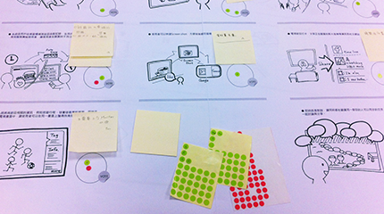

Progress of UX research
How we started
-
Diary
The designed diary is used to record the event which related to medias(video, photo, music, call...etc) in two days. Interviewees wrote and drawn the events and highlighted their opinions at that moment.
-
Interview
Interviewees presented their diary and shared the experience. Researchers asked the questions of the records and explored the potentials of user need.
-

Analysis
Researchers classified needs and painful points from records and translated them into insights.
-
Brainstorming
According to the classified needs and illuminating insights, members joined the brainstorming and proposed the new ideas for solving the lacks.
-

Idea evaluation and sketch
Ideas were evaluated by different function units in the organization. All ideas were reviewed item by item categorized by needs for satisfaction and practicability.
-
Storyboard
Interpreted those evaluated ideas on story boards and presented the concepts behind them accordingly.